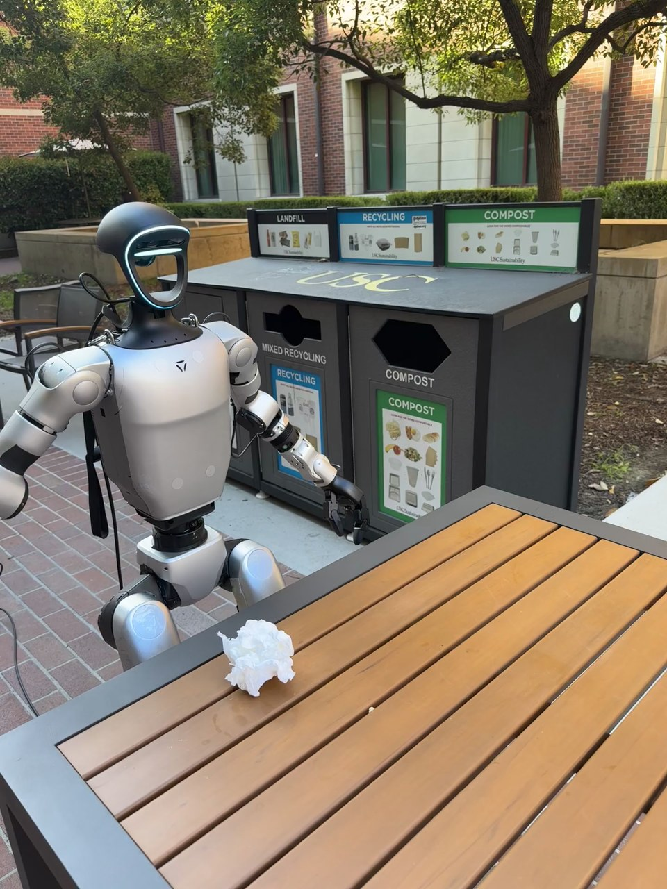

Humanoid Everyday · loco-manip-3__throw_paper_to_trashcan
Throw paper to trashcan

Visual review action_review.json
{
"prompt_protocol": "humanoid_action_v1",
"prompt_provenance": "visually_authored_from_video_and_initial_frame",
"reviewed_contact_sheets": [
"sheet_001.jpg",
"sheet_002.jpg",
"sheet_003.jpg",
"sheet_004.jpg",
"sheet_005.jpg",
"sheet_006.jpg",
"sheet_007.jpg"
],
"inspected_frame_stride": 2,
"inspected_sampled_frame_count": 408,
"initial_scene": "The humanoid faces the foreground table, which holds a single crumpled white paper-like wad near its edge. Behind the humanoid is a waste station with landfill, recycling, and compost compartments. The compost front opening is the rightmost hexagonal opening in the camera view.",
"observed_sequence": [
{
"start_frame": 0,
"end_frame": 63,
"action": "Robot holds its initial standing pose beside the table; white wad is on the tabletop and both hands are empty.",
"confidence": "high"
},
{
"start_frame": 64,
"end_frame": 153,
"action": "Anatomical right arm bends inward and reaches forward/down toward the crumpled wad; left hand stays away from the target.",
"confidence": "high"
},
{
"start_frame": 154,
"end_frame": 215,
"action": "Right hand encloses the white wad on the table and closes around it, compressing the wad before lifting. Native frames 160 and 204 show contact and a closed hold while the wad remains at tabletop level.",
"confidence": "high"
},
{
"start_frame": 216,
"end_frame": 283,
"action": "Right hand lifts the wad clear of the table and draws it upward toward the chest, retaining the grasp.",
"confidence": "high"
},
{
"start_frame": 284,
"end_frame": 501,
"action": "Robot steps away from the table, pivots toward the waste station, and walks forward until its back faces the camera. Right elbow remains bent with the paper held in front of the torso; left arm hangs free.",
"confidence": "high"
},
{
"start_frame": 502,
"end_frame": 591,
"action": "Robot extends its right arm toward the rightmost compost opening, positioning the held paper at the mouth of the bin.",
"confidence": "high"
},
{
"start_frame": 592,
"end_frame": 711,
"action": "Right arm remains extended at the compost opening with the paper still visibly held beneath/between the fingers, while the robot makes small stance adjustments. Native frames 604, 700, 706, and 710 retain the visible wad.",
"confidence": "high"
},
{
"start_frame": 712,
"end_frame": 723,
"action": "Right hand opens at the bin opening. The white wad descends beneath the fingers in native frame 714 and is absent by native frame 718, disappearing inside the dark opening rather than traveling in an observable long throwing arc.",
"confidence": "high"
},
{
"start_frame": 724,
"end_frame": 815,
"action": "Robot holds its now-empty right hand briefly near the opening, withdraws it, and steps backward away from the station. Final frame shows the empty right hand bent forward and the left arm lowered.",
"confidence": "high"
}
],
"arm_hand_roles": {
"right": "Sole manipulating hand: reaches for and grasps the wad, lifts and carries it near the chest during locomotion, extends to the compost opening, releases it, and withdraws empty.",
"left": "Remains free and lowered alongside the body; no grasp, support, stabilization, transfer, or contact with the paper/bin is visible.",
"coordination": "One-handed manipulation coordinated with whole-body stepping and turning; no two-hand coordination or hand-to-hand transfer."
},
"anatomical_side_evidence": {
"basis": "The source initial PNG and front-facing frames show the chest/front and both shoulder attachments. The manipulating arm originates at the robot's right shoulder, which appears on image left in that front-facing view. Its continuous motion is tracked through the turn; once the back faces the camera, the same right arm is on image right and extends toward compost.",
"confidence": "high",
"uncertainty": null
},
"whole_body_motion": "Steps away from the table while maintaining the right-hand grasp, pivots to face the station, walks forward to the opening, adjusts stance during release, and steps backward afterward.",
"evidence_frame_indices": [
0,
160,
204,
240,
292,
382,
494,
526,
554,
604,
700,
706,
710,
714,
718,
722,
736,
752,
760,
764,
768,
772,
786,
800,
815
],
"initial_png_inspected": true,
"initial_png_inspection": "Visually viewed the source PNG after inspecting the entire video sample coverage.",
"terminal_state": "The crumpled paper has disappeared through the compost opening, and the right hand is visibly empty. The humanoid has withdrawn its right arm and stepped back; the left hand remains lowered and empty. The paper's resting position within the enclosed bin is not visible.",
"selected_execution_status": "success",
"execution_status_basis": "The paper is visibly grasped and transported to the bin, descends after the right hand opens at the compost aperture, and is absent when the empty hand withdraws. Success here describes the observed disposal, without claiming an interior resting position.",
"uncertainties": [
"The interior of the compost bin is occluded, so the exact resting position after release cannot be observed.",
"The white wad visually resembles crumpled paper or tissue; precise material cannot be established from appearance alone."
],
"annotation_discrepancies": [
"The original instruction describes throwing motion and target aiming; the visible execution instead carries the wad close to the compost opening and releases it there, with no distinct free-flight throw visible."
],
"inspection_coverage": {
"source_frames": 816,
"sampled_frame_count": 408,
"stride": 2,
"sampled_range_inclusive": [
0,
814
],
"all_contact_sheets_visually_viewed": true,
"native_transition_and_final_frames_visually_viewed": true,
"source_initial_png_visually_viewed": true
},
"video_id": "loco-manip-3",
"dataset": "Humanoid_Everyday",
"dedicated_review_agent": "review_he_loco_manip_3",
"review_source_video": "Humanoid_Everyday/loco-manip-3__throw_paper_to_trashcan/third_person/original/original.mp4",
"source_frame_count": 816,
"source_fps": 30.0,
"native_detail_frames": [
160,
204,
240,
292,
382,
494,
526,
554,
604,
700,
706,
710,
714,
718,
722,
736,
752,
760,
764,
768,
772,
786,
800,
815
],
"world_model_prompt": "The humanoid grasps the crumpled white paper on the table with its right hand and lifts it, holding it near its chest while stepping away and turning toward the waste station. It walks up to the compost compartment, extends its right arm, and opens its hand to release the paper through the front opening. It withdraws its empty right hand and steps back from the bin. Keep the camera fixed; preserve robot geometry, physically valid joint motion, and normal gripper opening and closing.",
"original_task_instruction": "Walking to throw away a piece of paper to a trashcan, combining navigation with throwing motion and target aiming.",
"selected_segment": {
"start_frame": 0,
"end_frame_exclusive": 816,
"reason": "Complete original single-task reference; no cropping or trimming requested."
},
"source_video_sha256": "6a8702173f8340e2fb24fcfb16506f6ffb48d294e9b535e58bdd2a49705a4771",
"review_completed_at": "2026-10-13T17:39:05.436581+00:00"
}